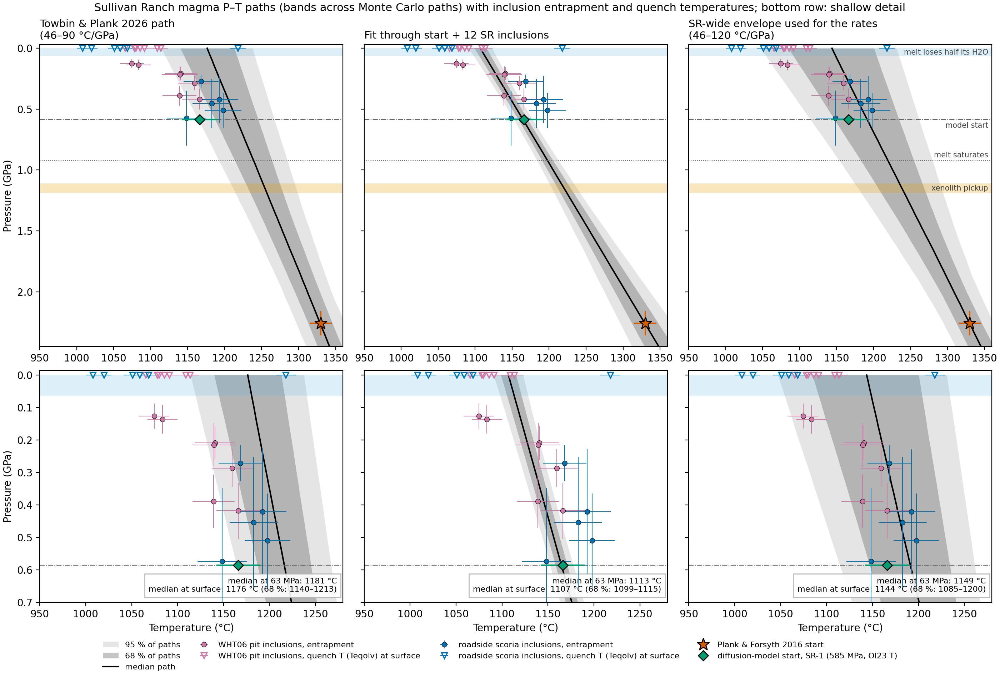

3 Introduction
Do hydrogen concentrations in xenolith minerals record the mantle, or the magma that carried them up? Peridotite xenoliths are used to estimate water in the lithospheric mantle, which matters for viscosity, melting and electrical conductivity. Laboratory work shows that H+ diffuses fast in olivine, cpx and opx, so a mineral can equilibrate with its carrier melt in hours. The thesis chapter asked whether that happens in nature, and tested it against the carrier magma’s own pressure, temperature, water content and degassing path. This report keeps that question and updates the answer.
3.1 The four stages on the 2026 path
How does the ascent divide into stages for H? The thesis used four, and Table 3.1 places them on the present P–T path. The magma leaves the last mantle equilibration at 1330 °C and 2.26 GPa (Plank and Forsyth 2016), picks up the xenolith at about 1.15 GPa, saturates at 682 MPa (MiMiC start; 922 MPa for the CO2/Nb start), and loses half of its H2O only below about 55 MPa (63 MPa) (Figure 3.1).
| Stage | Pressure | Temperature | What happens to H | Evidence |
|---|---|---|---|---|
| 0: lithospheric source | about 2.26 GPa | about 1330 °C | Mantle H in the NAMs, before the host | Plank and Forsyth (2016) thermobarometry |
| I: ascent, melt undersaturated | about 1.15 GPa to about 0.92 GPa, then CO2-dominated degassing to about 340 MPa | 1150–1280 °C | NAMs exchange H+ with the melt and reset to it | Interior opx cores equal 3.48 wt% melt H2O |
| II: final ascent, degassing | below about 55 MPa | about 1110–1180 °C | Diffusive H loss from olivine and exterior pyroxenes records the rate | Ol-2 profile; WHT1 exterior opx and cpx |
| III: after eruption | surface | quench at 1008–1113 °C (inclusions) | Profiles freeze; bomb cooling takes minutes | Flat cores; surviving Ol-2 profile |

The stages differ in what they let a xenolith record. In Stage I the melt is undersaturated, nothing leaves it, and the NAMs track its H2O. In Stage II water leaves the melt and the boundary value drops, so the outer parts of the crystals lose H. The profile length scale gives the time, and so the rate. The next section explains why Sullivan Ranch can test this.
3.2 Why Sullivan Ranch can test it
What makes this cone a good test? The cone in the Uinkaret field north of the Grand Canyon supplies every part of the system at one eruption.
- Xenoliths of different sizes: bombs GCB1, WHT01 and WHT06 give olivine, cpx and opx, and WHT1 has grains at 0.5, 7.5 and 40 mm from the xenolith exterior.
- Melt inclusions: 12 SR inclusions give the melt’s H2O, CO2, trapping pressure and temperature.
- A phenocryst, Ol-2: a scoria olivine profiled along [100] gives the rate without a xenolith.
The samples come from two localities, a pit (WHT06, AZ18-06 inclusions) and a roadside (GCB1, WHT01, GC2 inclusions), probably two magma pulses. The path is kept SR-wide. Vulcan’s Throne and Cima, separate volcanoes with drier melts, are used only to test the cpx partitioning, never for the rate.
3.3 What each later chapter answers
How does the report move through the evidence? Chapter 4 describes the samples and models, and Chapter 5 and Chapter 6 give the NAM and melt-inclusion results. The discussion then follows the thesis order. Chapter 7 asks whether post-eruptive cooling matters. Chapter 8 gives the rate, the one history that fits three minerals, and how the signal entered the xenolith. Chapter 9 asks whether the minerals reset to the host and for how long. Chapter 10 asks what survives of the mantle water, and Chapter 11 lists what is not determined. The next chapter, Chapter 4, sets out how the data were measured.
Sources: docs/plans/2026-10-29-report-review.md, report/appendices/c-ch3-crosswalk.md, data/supplement/summary_csv/.